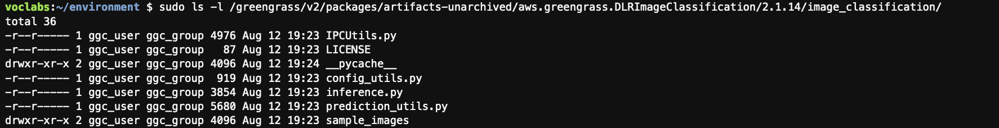
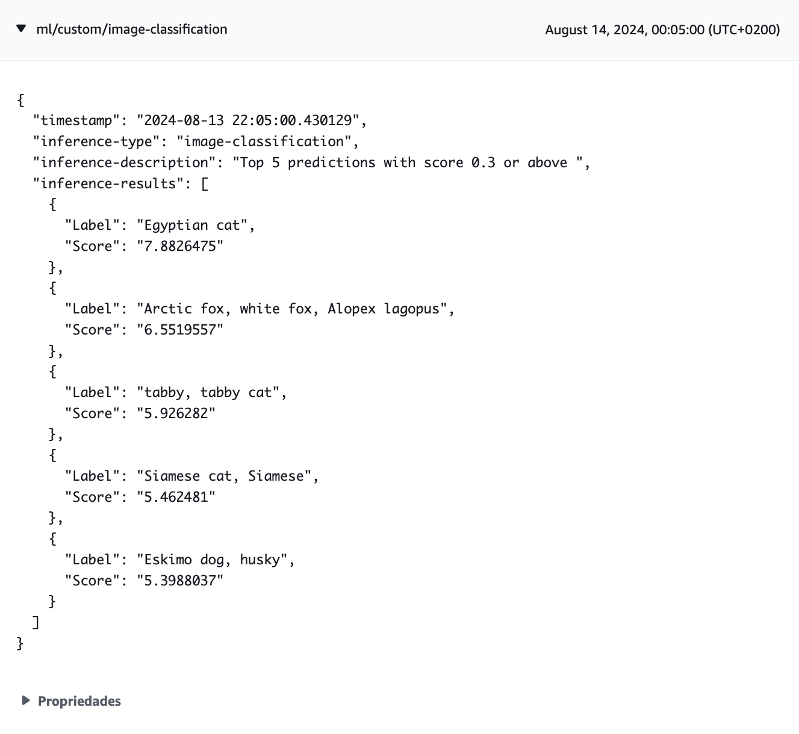
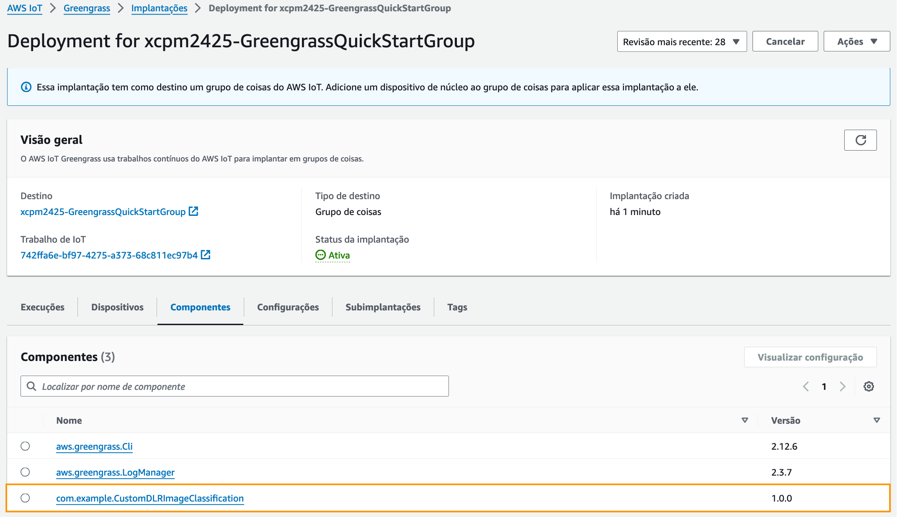

Actividade 2
COMPOÑENTES PERSONALIZADOS DE APRENDIZAXE MÁQUINA
Obxectivo
O obxectivo desta actividade é crear un compoñente personalizado para a execución de modelos de aprendizaxe máquina (ML). A partires do compoñente de inferencia da actividade anterior (aws.greengrass.DLRImageClassification) vamos crear unha versión modificada que se subscriba a un tópico IPC predefinido no que agarde recibir mensaxes JSON co seguinte esquema:
{
"image": "<ficheiro_jpeg>"
}
Cada vez que reciba unha mensaxe o compoñente fará unha inferencia coa imaxe indicada do directorio predefinido de imaxes e publicará o resultado no tópico MQTT predefinido.
Nota
Podes ver aquí a documentación sobre a implementación de compoñentes ML personalizados.
Creación do compoñente de inferencia ML personalizado
Para crear o compoñente fai o seguinte no ambiente Cloud9:
- Descarga a receita do compoñente no directorio de receitas.
$ cd ~/environment/GreengrassCore/recipes
$ DLR_INFERENCE_ARN=$(aws greengrassv2 list-components \
--scope PUBLIC \
--query 'components[?componentName==`aws.greengrass.DLRImageClassification`]' | jq -r '.[0].arn')
$ DLR_INFERENCE_VERSION_ARN=$(aws greengrassv2 list-component-versions \
--arn $DLR_INFERENCE_ARN \
--query 'componentVersions[0].arn' \
--output text)
$ aws greengrassv2 get-component \
--arn $DLR_INFERENCE_VERSION_ARN \
--recipe-output-format JSON \
--query recipe \
--output text | base64 --decode | jq '.' > aws.greengrass.DLRImageClassification-1.0.0.json
- Descarga a receita modificada que vamos usar para o compoñente personalizado. Edita a receita e insire o teu nome no campo
ComponentPublisher.
$ wget -O com.example.CustomDLRImageClassification-1.0.0.json https://miot-cniot.github.io/practica_4/stuff/CustomDLRImageClassification-1.0.0.json
-
Compara as receitas e comproba os cambios que se fixeron para adaptala ao noso exemplo. Os principais foron:
- Reduciuse o número de plataformas soportadas polo compoñente á única que nos interesa para o exemplo.
- Engadironse á configuración unha política de control de acceso para os tópicos IPC e un parámetro
LocalTopicpara configurar o tópico IPC a usar.
-
Comproba os artefactos do compoñente orixinal.
$ sudo ls -l /greengrass/v2/packages/artifacts-unarchived/aws.greengrass.DLRImageClassification/2.1.14/image_classification/
 Imaxe: artefactos do compoñente DLRImageClassification.
- Crea o directorio para os artefactos do compoñente personalizado.
$ mkdir -p ~/environment/GreengrassCore/artifacts/com.example.CustomDLRImageClassification/1.0.0 && cd ~/environment/GreengrassCore/artifacts/com.example.CustomDLRImageClassification/1.0.0
- Copia os ficheiros Python ao directorio de artefactos do compoñente personalizado e configura os permisos.
$ sudo cp /greengrass/v2/packages/artifacts-unarchived/aws.greengrass.DLRImageClassification/2.1.14/image_classification/*.py .
$ sudo chown ubuntu:ubuntu *.py
$ chmod 664 *.py
- Descarga o ficheiro
inference.pymodificado para o compoñente personalizado.
$ mv inference.py inference.1.py
$ wget https://miot-cniot.github.io/practica_4/stuff/inference.py
-
Abre ambos ficheiros
inferencee comproba os cambios que se fixeron para adaptalo ao noso exemplo. Os principais foron:- Engadiuse o código que realiza a subscrición ao tópico IPC.
- Definiuse un manexador (InferenceRequestHandler) para procesar os eventos da subscrición IPC. A parte máis relevante do manexador é o método
on_stream_eventque é o que procesa as mensaxes que se reciben no tópico e fai unha inferencia se procede.
Nota
Presta atención a que o código engadido en
inference.pyé semellante ao do Subscriber que se viu na sección 5 do curso. -
Unha vez remates de comprobar as diferenzas, elimina a copia
inference.1.py. -
Crea un directorio para as imaxes e descarga a imaxe de proba.
$ mkdir ~/environment/image_classification && cd ~/environment/image_classification
$ wget https://raw.githubusercontent.com/awslabs/aws-greengrass-labs-ml-components/main/dlr/aws.greengrass.DLRImageClassification/image_classification/sample_images/cat.jpeg
Despregadura do compoñente
-
Na consola IoT fai unha nova despregadura no dispositivo Greengrass edgeDevice que NON inclúa o compoñente aws.greengrass.DLRImageClassification.
-
Asegúrate de que non quede ningunha dependencia do compoñente no dispositivo.
$ sudo /greengrass/v2/bin/greengrass-cli component list | grep -E 'Component Name:.*DLR' -A 3
-
No cliente MQTT da consola de AWS IoT subscríbete ao tópico
ml/custom/image-classification, no que o compoñente personalizado publicará os resultados das inferencias. -
Desprega o compoñente personalizado.
$ sudo /greengrass/v2/bin/greengrass-cli deployment create \
--recipeDir ~/environment/GreengrassCore/recipes \
--artifactDir ~/environment/GreengrassCore/artifacts \
--merge "com.example.CustomDLRImageClassification=1.0.0"
- Comproba que a despregadura se completou correctamente.
$ sudo /greengrass/v2/bin/greengrass-cli component list | grep -E 'Component Name:.*DLR' -A 3
$ sudo cat /greengrass/v2/logs/com.example.CustomDLRImageClassification.log
-
Comproba tamén se se recibiu no cliente MQTT da consola AWS IoT o resultado da inferencia no tópico
ml/custom/image-classification. -
Se os pasos anteriores non dan os resultados agardados, comproba no log do Greengrass se houbo erros durante a despregadura do compoñente. Podes consultar aquí os erros máis comúns.
Verificación do funcionamento
- Abre un novo terminal no ambiente Cloud9 e subscríbite ao tópico IPC
ml/image.
$ sudo /greengrass/v2/bin/greengrass-cli pubsub sub -t="ml/image"
Successfully subscribed to topic: ml/image
- Desde outro terminal diferente publica unha mensaxe no tópico
ml/image.
$ sudo /greengrass/v2/bin/greengrass-cli pubsub pub -m="{\"image\": \"cat.jpeg\"}" -t="ml/image"
No terminal no que executaches a subscrición aparecerá a mensaxe
{"image": "cat.jpeg"}que ten o formato JSON que o compoñente agarda recibir.
-
Comproba que tamén se recibira no cliente MQTT da consola AWS IoT o resultado da inferencia no tópico
ml/custom/image-classification. -
Descarga outra imaxe no directorio de imaxes de proba.
$ pwd
/home/ubuntu/environment/image_classification
$ wget -O cat2.jpeg https://www.publicdomainpictures.net/pictures/90000/velka/cat-14022476612Gk.jpg
- Publica a mensaxe co nome do novo ficheiro e comproba que se reciba no cliente MQTT o resultado da inferencia.
$ sudo /greengrass/v2/bin/greengrass-cli pubsub pub -m="{\"image\": \"cat2.jpeg\"}" -t="ml/image"
 Imaxe: mensaxe co resultado da inferencia.
- Podes facer máis probas se queres descargando outras imaxes e publicando o seu nome.
Publicación e despregadura do compoñente
- Crea un bucket S3 para subir os artefactos e receita do compoñente.
$ EPOCH_TIME=$(date +"%s") && S3_BUCKET=ggcv2-workshop-$HOSTNAME-$EPOCH_TIME && aws s3 mb s3://$S3_BUCKET --region $AWS_DEFAULT_REGION
- Troca o manifesto da receita polo seguinte. Os cambios que se fixeron foron:
- Engadiuse o obxecto
Artifacts. Lembra engadir na URI o nome do teu bucket. - No script cambiouse a localización do ficheiro
inference.pyde{artifacts:path}a{artifacts:decompressedPath}/custom.
- Engadiuse o obxecto
{
"Platform": {
"os": "linux",
"architecture": "amd64"
},
"Lifecycle": {
"setEnv": {
"DLR_IC_MODEL_DIR": "{variant.DLR.ImageClassification.ModelStore:artifacts:decompressedPath}/{configuration:/ModelResourceKey/x86_64}",
"DEFAULT_DLR_IC_IMAGE_DIR": "/home/ubuntu/environment/image_classification/",
"TOPIC": "{configuration:/LocalTopic}"
},
"run": {
"RequiresPrivilege": "true",
"script": "\n export PATH=\"{variant.DLR:configuration:/MLRootPath}/greengrass_ml_dlr_conda/bin:$PATH\"\n eval \"$({variant.DLR:configuration:/MLRootPath}/greengrass_ml_dlr_conda/bin/conda shell.bash hook)\"\n conda activate greengrass_ml_dlr_conda\n python3 {artifacts:decompressedPath}/custom/inference.py"
}
},
"Artifacts": [
{
"URI": "s3://[YOUR BUCKET NAME]/artifacts/com.example.CustomDLRImageClassification/1.0.0/custom.zip",
"Unarchive": "ZIP"
}
]
}
- Comprime os artefactos do compoñente e sube o ficheiro comprimido e a receita ao bucket S3.
$ cd ~/environment/GreengrassCore
$ ARTIFACTS_DIR="./artifacts/com.example.CustomDLRImageClassification/1.0.0"
$ zip -j $ARTIFACTS_DIR/custom.zip $ARTIFACTS_DIR/*.py
$ aws s3 cp $ARTIFACTS_DIR/custom.zip s3://$S3_BUCKET/artifacts/com.example.CustomDLRImageClassification/1.0.0/
$ aws s3 cp ./recipes/com.example.CustomDLRImageClassification-1.0.0.json s3://$S3_BUCKET/recipes/
- Comproba que os contidos do bucket son correctos.
$ aws s3 ls --recursive s3://$S3_BUCKET
2024-08-14 08:31:47 6396 artifacts/com.example.CustomDLRImageClassification/1.0.0/custom.zip
2024-08-14 08:32:02 3071 recipes/com.example.CustomDLRImageClassification-1.0.0.json
- Crea o compoñente no AWS IoT Core.
$ cd ~/environment/GreengrassCore/recipes
$ aws greengrassv2 create-component-version --inline-recipe fileb://com.example.CustomDLRImageClassification-1.0.0.json --region $AWS_DEFAULT_REGION
{
"arn": "arn:aws:greengrass:us-east-1:009649136346:components:com.example.CustomDLRImageClassification:versions:1.0.0",
"componentName": "com.example.CustomDLRImageClassification",
"componentVersion": "1.0.0",
"creationTimestamp": "2024-08-14T08:37:26.175000+00:00",
"status": {
"componentState": "REQUESTED",
"message": "NONE",
"errors": {},
"vendorGuidance": "ACTIVE",
"vendorGuidanceMessage": "NONE"
}
}
- Comproba que aparece na listaxe de compoñentes. Compróbao tamén na consola do AWS IoT.
$ aws greengrassv2 list-components --region $AWS_DEFAULT_REGION --query='components[?componentName==`com.example.CustomDLRImageClassification`]'
[
{
"arn": "arn:aws:greengrass:us-east-1:009649136346:components:com.example.CustomDLRImageClassification",
"componentName": "com.example.CustomDLRImageClassification",
"latestVersion": {
"arn": "arn:aws:greengrass:us-east-1:009649136346:components:com.example.CustomDLRImageClassification:versions:1.0.0",
"componentVersion": "1.0.0",
"creationTimestamp": "2024-08-14T08:37:26.175000+00:00",
"description": "Custom Image classification inference using DLR and resnet50 default model.",
"publisher": "Xoan C. Pardo",
"platforms": [
{
"attributes": {
"architecture": "amd64",
"os": "linux"
}
}
]
}
}
]
- Elimina o compoñente despregado localmente. Asegúrate de que non quede ningunha dependencia do compoñente no dispositivo.
$ sudo /greengrass/v2/bin/greengrass-cli --ggcRootPath /greengrass/v2 deployment create --remove "com.example.CustomDLRImageClassification"
Local deployment submitted! Deployment Id: 2a648ca5-6de8-4fd4-954c-50cdb43a6e16
$ sudo /greengrass/v2/bin/greengrass-cli component list | grep -E 'Component Name:.*DLR' -A 3
$
- Na consola IoT fai unha nova despregadura no dispositivo Greengrass edgeDevice que inclúa o compoñente personalizado com.example.CustomDLRImageClassification.
 Imaxe: compoñente personalizado despregado desde AWS IoT.
- Verifica o funcionamento correcto do compoñente repetindo os pasos da sección de verificación.
Xustificación da actividade
Toma as seguintes capturas para a memoria de xustificación da práctica:
-
Consola IoT mostrando a despregadura do compoñente com.example.CustomDLRImageClassification no dispositivo edgeDevice (aba Compoñentes escollida nas propiedades da despregadura).
-
Ambiente Cloud9 no que poidan verse na árbore de directorios os artefactos e receita do compoñente CustomDLRImageClassification e os contidos do directorio image_classification, e ademais:
- A saída do terminal no que se executou o comando de subscrición ao tópico
ml/image. - A saída do terminal desde o que se publicaron as mensaxes no tópico.
- A saída da execución dos comandos:
- A saída do terminal no que se executou o comando de subscrición ao tópico
$ aws s3 ls --recursive s3://$S3_BUCKET
$ sudo /greengrass/v2/bin/greengrass-cli component list | grep -E 'Component Name:.*DLR' -A 3
$ sudo tail -2 /greengrass/v2/logs/aws.greengrass.CustomDLRImageClassification.log
O último comando ten que executarse despois de completar unha inferencia e ten que mostrar as mensaxes do log que indican que se enviaron os resultados da inferencia ao AWS IoT Core.
- Consola IoT coa mensaxe MQTT recibida no tópico
ml/custom/image-classificationpara o ficheirocat2.jpeg, na que poida verse o payload.
Importante
As capturas teñen que asemellarse ás que se tomaron no curso e nas prácticas anteriores. As capturas tomadas na consola AWS teñen que incluír o menú superior no que poida verse o nome de usuario da conta.